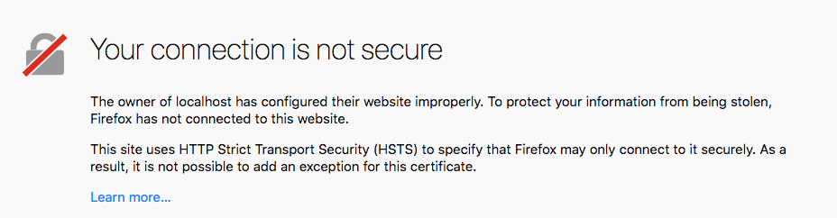

In this walkthrough, we will be looking at how a servers use certificates to validate their identity.
Spring Security
For this walkthrough, we will be using Spring Security to secure our application. Spring Security will enable us to use username/password, client certificates, and attach a certificate to our server.
HTTPS Certificates with Spring Security
Basic Access Authentication is not secure by itself, it should be used with HTTPS. We want to add HTTPS to our web application using Spring Security.
Enable HTTPS in Applicaiton Properties
There are specific properties in application.properties that configure Spring Security and Tomcat server settings. More information on Spring Security Users
These are the properties that enable HTTPS (SSL):
server.ssl.key-store=src/main/resources/certs/keystore.jks
server.ssl.key-store-password=${CERT-PASSWORD}
server.ssl.key-alias=localhost
server.ssl.key-password=${CERT-PASSWORD}
server.ssl.enabled=true
server.port=8443
Note
Port 8443 is the alternate SSL port. The default SSL port is 443
Warning
If you run bootRun before creating certs for HTTPS, you will see this error: The Tomcat connector configured to listen on port 8443 failed to start. The port may already be in use or the connector may be misconfigured.
Create HTTPS Certificate
After checking out the example project, you will need to generate the cryptographic components required for Spring Boot to host a certificate.
A jks also known as a Java Key Store will need to be generated. Since we will be using a self-signed certificate, this jks file will act as our local Certificate Authority. Run the following command (be sure to use a secure password!):
Create Keystore (keystork.jks)
$ make create-keystore PASSWORD=changeit
$ # Generate a certificate authority (CA)
keytool -genkey -alias ca -ext BC=ca:true \
-keyalg RSA -keysize 4096 -sigalg SHA512withRSA -keypass changeit \
-validity 3650 -dname 'CN=LaunchCode CA,OU=launchcode.org,O=LaunchCode,L=Saint Louis,ST=Missouri,C=CC' \
-keystore keystore.jks -storepass changeit
By doing an ls, you should now see that you keystore.jks file in your directory.
Create Certificate (localhost.crt)
Next you will create a certificate for you local development environment. Run the following command::
$ make add-host HOSTNAME=localhost PASSWORD=changeit
Running ls will show that there are now two additional files in your director: localhost.csr and localhost.cst.
Create Truststore (ca.crt)
Next, you will need to create a truststore. The truststore is where all trusted certificates are located. It is essentially the known_hosts for certificates.
$ make create-truststore PASSWORD=changeit
# Export certificate authority
keytool -export -alias ca -file ca.crt -rfc \
-keystore keystore.jks -storepass changeit
Certificate stored in file <ca.crt>
# Import certificate authority into a new truststore
keytool -import -trustcacerts -noprompt -alias ca -file ca.crt \
-keystore truststore.jks -storepass changeit
Certificate was added to keystore
Running ls will show that two more files have been added to your directory: ca.crt and truststore.jks.
Connection is Not Secure
Let’s try out our app and see what happens.
- Uncomment all properties in
application.properties
- Set all values in Run Configurations
- Run or ReRun
bootRun task
- Go to
https://localhost:8443/ in your browser
- You should see this or something like it depending on your browser

Add Certificate Authority to the Browser (ca.crt)
Upon running the app, navigate to https://localhost:8443. Notice that the app is now running on https. This says that all traffic going over the write is encrypted. The only question is “Do you trust the person that you are talking to?”.
The first thing you will notice is that your browser doesn’t recognize the certificate from the server. Anytime there is a bad certificate on a server, your browser will freak out. Let’s fix that.
Add ca.crt as a CA to your browser
Client Certificates
Spring Security can be configured to authenticate users using client certificates.
Enable Certificate Authentication in Spring Security
Add these properties to application.properties to enable client authentication user certificates:
server.ssl.trust-store=src/main/resources/certs/truststore.jks
server.ssl.trust-store-password=${CERT-PASSWORD}
server.ssl.client-auth=need
Update UserController Class
::
TODO
Update CertsApplication Class
::
TODO
Add CNUserDetailService Class
::
TODO
Try it Out Before Creating Client Certificate
Show image of 403 error
Create and Add Client Certificate to Keystore (janet.crt)
Next, you will create a client certificate and add it to the truststore.
$ make add-client CLIENTNAME=janet PASSWORD=changeit
//output
keytool -genkey -alias janet \
-keyalg RSA -keysize 4096 -sigalg SHA512withRSA -keypass changeit \
-validity 3650 -dname 'CN=janet,OU=launchcode.com,O=LaunchCode,L=Saint Louis,ST=Missouri,C=CC' \
-keystore truststore.jks -storepass changeit
# Generate a host certificate signing request
keytool -certreq -alias janet -ext BC=ca:true \
-keyalg RSA -keysize 4096 -sigalg SHA512withRSA \
-validity 3650 -file "janet.csr" \
-keystore truststore.jks -storepass changeit
# Generate signed certificate with the certificate authority
keytool -gencert -alias ca \
-validity 3650 -sigalg SHA512withRSA \
-infile "janet.csr" -outfile "janet.crt" -rfc \
-keystore keystore.jks -storepass changeit
# Import signed certificate into the truststore
keytool -import -trustcacerts -alias janet \
-file "janet.crt" \
-keystore truststore.jks -storepass changeit
Certificate reply was installed in keystore
# Export private certificate for importing into a browser
keytool -importkeystore -srcalias janet \
-srckeystore truststore.jks -srcstorepass changeit \
-destkeystore "janet.p12" -deststorepass changeit \
-deststoretype PKCS12
Add Client Certificate to the Browser
Your browser needs to be configured to use a certificate to authenticate you when visiting certain sites.
TODO: instructions and images
Summary of Client Authentication
A lot just happened, let’s review.
- First, it needs to create a key for your user. A key is created and placed in the
keystore.jks.
- Second, a signing requrest
.csr file was generated based on the key. This is what is used to aske the Certificate Authority to sign your certificate.
- Third, the signing requrest
.csr is passed to the Certificate Authority and a signed certificate is passed back as the janet.crt.
- Fourth, the
janet.crt file is stored in the truststore.jks.
- Fifth and finally, the
janet.crt file needs to be exported so that it can be included in the browser. The result is a janet.p12 file that can be given to the user and used to authenticate against an X509 server.